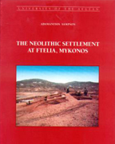

 |
The Neolithic settlement of Ftelia is situated in the northern part of the island of Mykonos. The mound of Ftelia covers a real settlement, extenting in the present to more than half an hectar, with thick deposits and an impressive abundance of debris from the everyday life of its inhabitants.
The project was undertaken in 1995 by the Ephorate of Cyclades of the Ministry of Culture, under the direction of Dr Adamantios Sampson, then Ephor of Antiquities. The excavation continued in 1996, was suspended for three years, and was fully set forth since the year 2000 under the direction of the same person, who is now professor of Archaeology, and the auspices of the University of the Aegean, Department of Mediterranean Studies
So far four structural levels have been observed, but the latest one is very destroyed by the erosion. The most important is a building of megaron –like type on the top of the hill, ascribed to the earliest phase of the settlement. It is directed North-South and has walls preserved at the height of 1.40 m. After five years of excavating, an enormous quantity of material, mainly pottery sherds, has been catalogued. It has been noted that pottery consists mainly of plain unpainted ware in higher strata, while black ware increases in number in the earlier ones. A decorated pottery consists of thick white or red slip that covers the vase's black burnished surface after firing. This pottery is part of the production of a local workshop that appears in the Cyclades for the first time.
Obsidian tools also occur in remarkable abundance. Arrow- and spearheads of excellent workmanship in particular occur in many tens, demonstrating a marked specialisation in hunting or fishing
The project's purpose from the beginning was to clarify the prehistoric occupation sequence in the area of Cyclades, with emphasis on issues of subsistence strategies and contacts with the Greek mainland and Asia Minor. The project also intended to enrich our knowledge on the palaeoenvironment, and to detect phenomena such as sea level changes, regional palaeogeomorphology, and climatic conditions. |
{kind=link}